Portfolio
Preservation projects in and around the South Carolina Low Country, including sites listed on the National Register of Historic Places, historic churches and civic buildings, and private plantations and residences.
Private residences
13 photographs
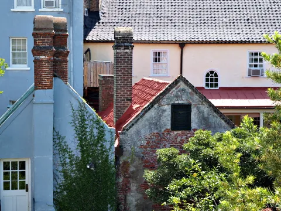
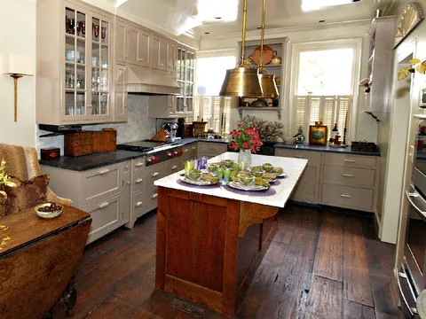
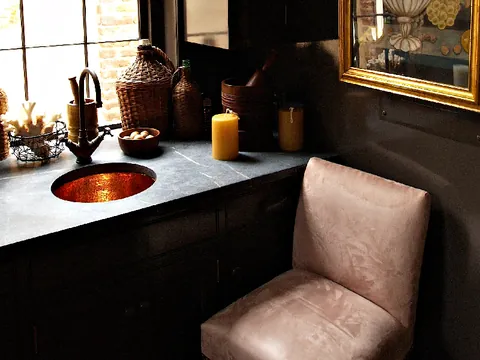
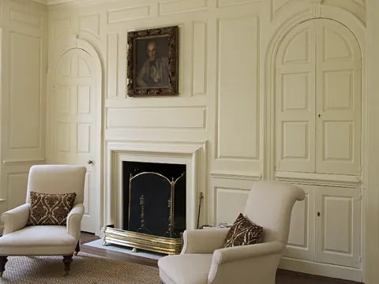
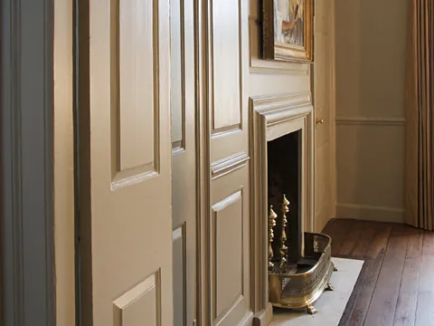
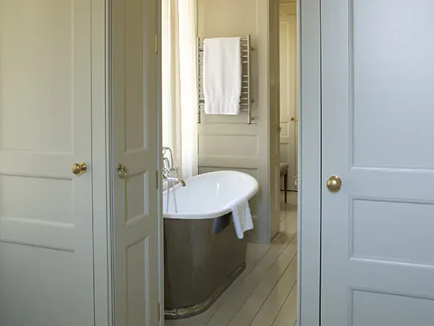
Show 7 more photographs
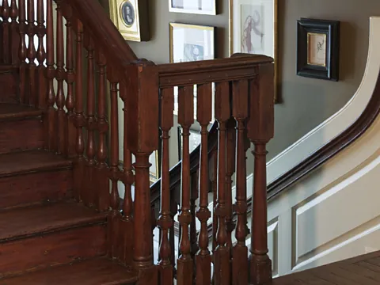
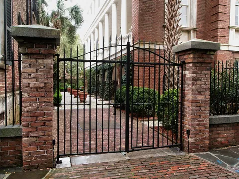
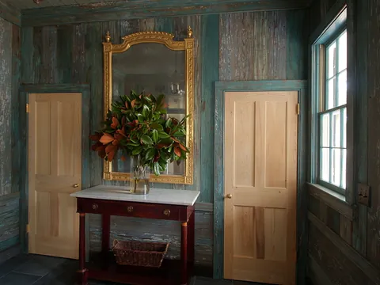
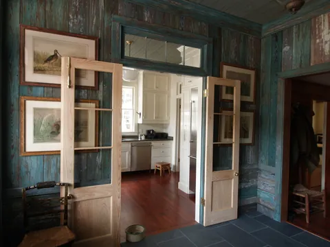
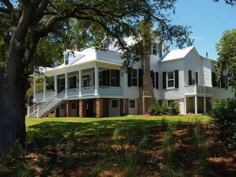
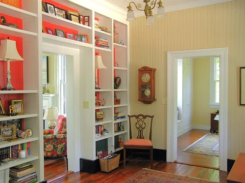
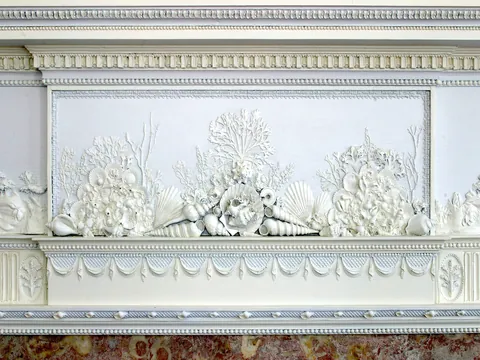
House museums
9 photographs
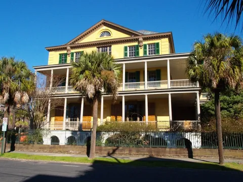
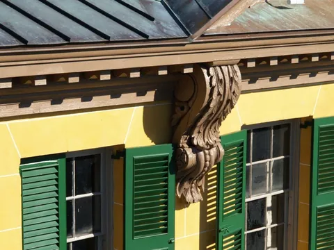
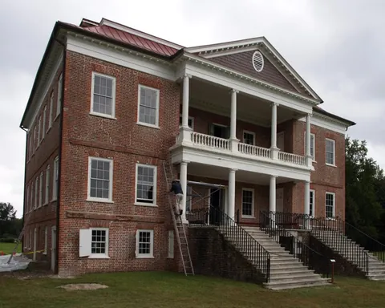
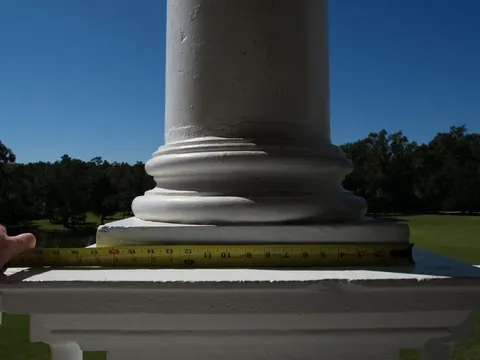
Show 3 more photographs
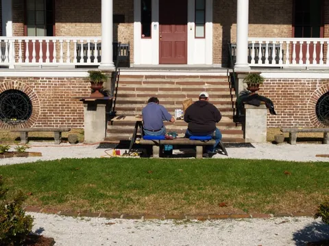
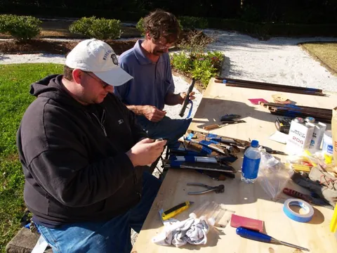
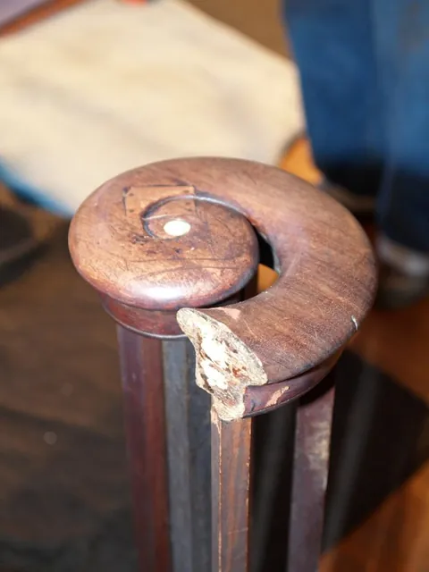
Churches
3 photographs
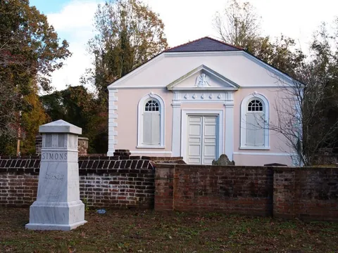
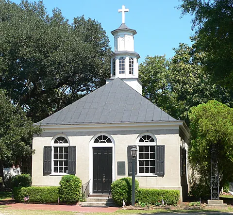
Millwork and furniture
From the firm's cabinetry and millwork workshops
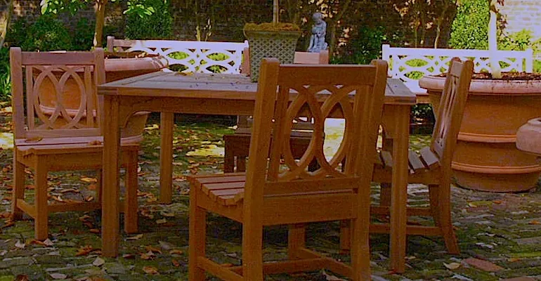
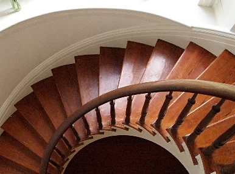
Let us help with your preservation project
Projects range from private residential restorations to National Register nominations and Board of Architectural Review submittals.
Richard Marks Restorations, Inc.
12 Vanderhorst Street, Suite D
Charleston, South Carolina 29403
12 Vanderhorst Street, Suite D
Charleston, South Carolina 29403